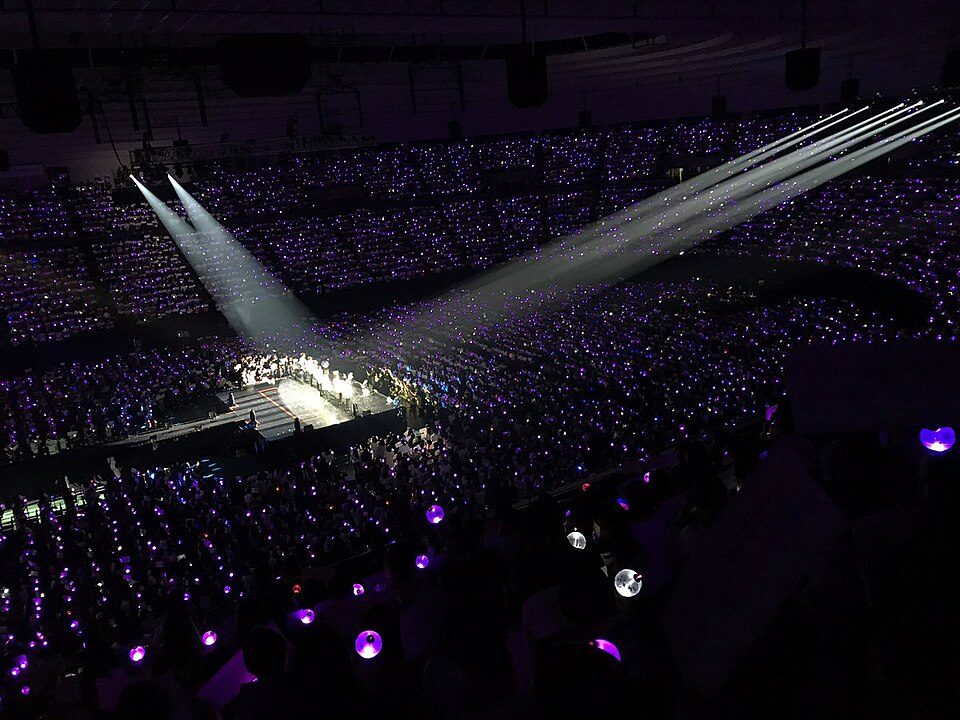

L'Océan de Lightsticks — Communion & Technologie Bluetooth
Dans chaque stade, des dizaines de milliers de bâtons lumineux programmés transforment le public en un écran géant immersif, matérialisant l'unité communautaire et la ferveur des fans à l'échelle planétaire.

La Psychologie du "Lightstick Ocean"
Dans la culture musicale occidentale, le spectateur assiste au concert principalement en tant qu'observateur récepteur. Dans la K-Pop, le lightstick confère au fan un statut d'acteur partagé du spectacle : chaque spectateur devient un pixel vivant d'une scénographie lumineuse orchestrée depuis la régie centrale.
Ce sentiment d'appartenance collective transcende les barrières linguistiques et nationales : que le concert ait lieu à Séoul, Paris, Tokyo ou São Paulo, l'océan de lumière produit le même rituel d'union sacrée entre l'artiste et son public.
🏮 Du Simple Merchandising à l'Identité de Marque
- Des designs iconiques et uniques : L'ARMY Bomb de BTS (sphère militaire translucide), le BI-Ping-Bong de BLACKPINK (marteau kawaii sonore), le Nachimbong de Stray Kids (boussole poétique), le Binky Bong de NewJeans (lapin interchangeable).
- Le cauchemar du « Black Ocean » : Dans les années 2000, l'extinction collective des bâtons lumineux constituait la pire sanction infligée par un public hostile. Aujourd'hui, l'entraide inter-fandoms illumine chaque artiste.
- Rituel d'intégration : Allumer son premier lightstick officiel constitue souvent pour un fan l'étape initiatique de son entrée dans la communauté.
Donnez votre ressenti sur le forum
Avez-vous déjà vécu l'expérience d'un concert synchronisé en arène ? Partagez vos souvenirs !